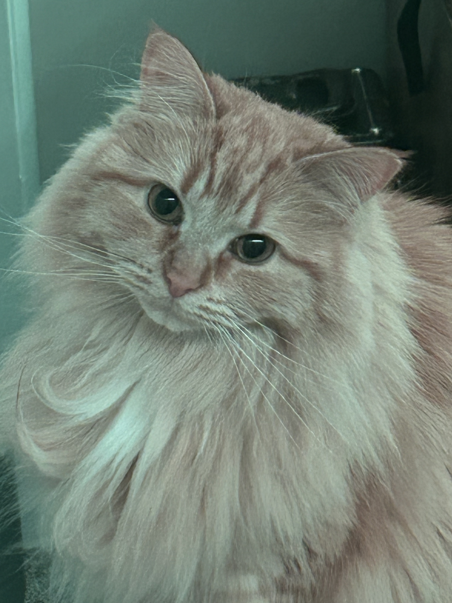
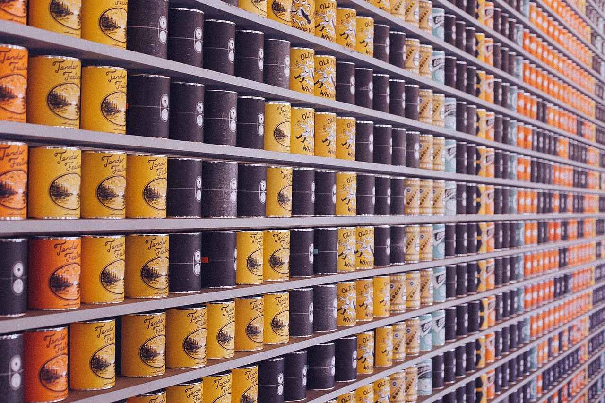

The Value of Academic Research
A blog post discussing the common experiences and benefits of performing academic research as an undergraduate student.
6 Underrated Apps for College Student Success
A quick podcast discussing six essential apps that are very useful for college students yet aren't widely known.

Video Project
A short video of my cat Tater Tot.

Hokies for the Hungry
The Marching Virginians contribute to the Hokies for the Hungry food drive every year to give back to the community and provide for those in need.